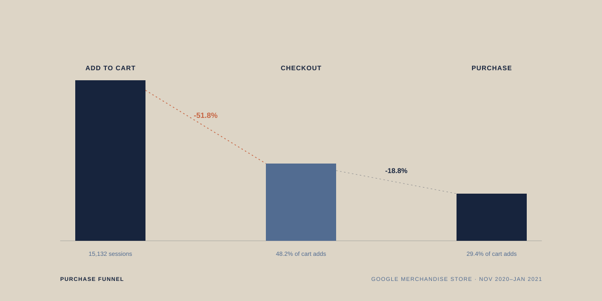

Where the purchase funnel breaks down, and why customers don't come back.
Independent analysis of the Google Merchandise Store's public sample transaction dataset, not affiliated with or endorsed by Google. The dataset has no marketing channel or spend data, so this is a funnel, segmentation and retention analysis, not a channel-ROI analysis. It also spans three months, so retention is measured at 30/60 days rather than long-term.
Where does the funnel break down, which segments and products actually drive value, and do customers come back?
Google Merchandise Store has real customer behavior data: cart activity, checkout, purchases, and lifetime value, but nothing connecting where customers drop off, which products and segments actually generate value, and whether customers come back. This project answers four questions with SQL, visualized in Tableau: where the purchase funnel breaks down, which customer segments (device, country) are worth the most, which products and price points convert versus get abandoned, and whether customers come back and buy again.
It extends the campaign reporting and audience segmentation work I did at Vadilal Industries: the same kind of business question, but answered from raw event-level data with SQL instead of ad-platform dashboards.
Independent analyst and dashboard builder, end to end: loaded and modeled the raw data, wrote every SQL query, and designed and published the Tableau dashboard.
Three real tables, 750K+ events, 270K users, 1,380 products, covering Nov 2020–Jan 2021:
Known limitation: no marketing channel or spend data, so this is funnel + segmentation + retention analysis, not channel-ROI. Data spans three months, so retention is measured at 30/60 days, not long-term.
Loaded the three CSVs into a SQLite database and indexed the join keys (user_id, item_id). Wrote the funnel query using window functions (FIRST_VALUE, LAG) to get stage-to-stage drop-off in one query instead of four separate manual calculations. Built a per-user segment table with CTEs: each user's most common device and country (via ROW_NUMBER on frequency) joined to their LTV and first-purchase category. Joined events to items to get cart-to-purchase conversion by category and price band. Built a cohort table, grouping users by first-purchase month, then measured what percentage repurchased in month +1 and +2 using date math. Exported each result as a clean CSV and loaded it into Tableau. The published dashboard was rebuilt against the BigQuery-hosted version of the same data, with the retention heatmap using a FIXED level-of-detail calculation to show true retention percentage per cohort rather than raw active-user counts.
Analysis 01 · Funnel
Because the drop-off holds almost identically across every device and country, it reads as a checkout-flow problem, not a targeting problem.
Analysis 02 · Segments
Analysis 03 · Products & price
Conversion generally drops as price increases, with one exception: $30–50 converts better than $15–30, so the relationship isn't purely linear.
Analysis 04 · Retention
Repeat-purchase rate is the weakest part of the business across both cohorts measured.
The checkout drop-off is consistent across every device and country, which points to a structural checkout problem rather than a targeting or audience problem. Apparel is the clear volume and value engine, while Notebooks & Journals shows near-total cart abandonment despite high cart volume, a pattern that looks like friction (price display, shipping cost, stock) rather than normal demand softness. Conversion falls as price rises, but not in a straight line. And whatever drives a first purchase isn't translating into a second one: retention is the weakest part of the funnel.
Checkout drop-off is nearly identical across every device and country, so it's a checkout-flow problem, not a targeting problem.
Notebooks & Journals has high cart volume but near-zero conversion, a friction signal, not a demand signal.
Repeat purchase rate is under 7% at one month and under 1% at two months across both measurable cohorts.
Fix the checkout flow before spending more to acquire traffic, since the leak is structural and present everywhere.
Investigate Notebooks & Journals directly: price display, shipping cost, and stock status, rather than assuming low demand.
Prioritize retention over acquisition: a targeted post-purchase email or remarketing push, especially toward Apparel buyers.
Checkout drop-off is consistent across every segment, which points to a structural checkout problem worth fixing before spending more to acquire traffic. Notebooks & Journals should be investigated directly: near-zero conversion on high cart volume is a friction issue, not a demand issue. Given how low repeat-purchase rates are across the board, retention, not acquisition, is the bigger opportunity: a targeted post-purchase email or remarketing push toward Apparel buyers (highest volume, strong LTV) is likely to return more value than further top-of-funnel spend.
Applied SQL to analyze 750K+ real e-commerce events across the purchase funnel, customer segments, and product performance; identified a consistent checkout drop-off and under 7% two-month repeat-purchase rate; and published an interactive 7-chart Tableau dashboard, extending the campaign and audience analysis work from Vadilal Industries into raw-data-driven customer analytics.
The published dashboard combines seven sheets into one view: the funnel at top, segment and product performance in the middle, and the retention cohort heatmap at the bottom.
This project pushed me to answer a business question from raw event data instead of a pre-built ad-platform report, which meant writing the aggregation logic myself: window functions for the funnel, CTEs for segmentation, date math for cohorts. The most useful discipline was resisting the urge to explain every number the same way twice: the checkout drop-off, the Notebooks & Journals abandonment, and the retention gap all needed a different kind of investigation, not one blanket recommendation.